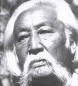

Товч мэдээлэл
 tatahНамайг Еншөөбү овогт Бямбын Ринчен гэдэг (1905.11.21—1977.03.04) Монголын орчин үеийн утга зохиолыг үндэслэгчдийн нэг, XX зууны манлай монголч эрдэмтэн байв. Англи, франц, герман, чех, польш, эсперанто, орос хэлийг гаргууд эзэмшсэн бөгөөд эсперанто хэлний өөрөө сурах бичиг зохиосон эрдэмтэн мөн Монгол улсын хамгийн анхны Докторын зэрэг хамгаалсан хүн юм.
Хэрвээ бичлэг болон дууг тоглуулахыг хүсвэл
Minii hobby линкээр орж тоглуулж мөн татаж авна уу